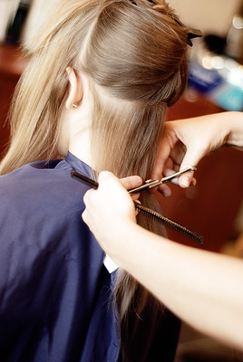

Experience
1. Barista / Cafe Regulator: Temptations Café - Brookline, MA
Mar. 2022 - Aug. 2022
- Collaborated with 15 other baristas to form a system where we each (4 per shift) rotated between taking orders, making drinks, stocking, and heading online orders throughout every shift which created a secure and reliable team dynamic
- Demonstrated personal dedication by memorizing 18-20 unique drink recipes in three shifts so my contribution to the team was immediate which showed my eagerness to be apart of it
- Trusted to monitor café earnings through balancing the cash drawer twice a week during opening and closing duties for a total of 350+ times to create and sustain employee accountability
2. Administrative Assistant / Salon Coordinator: Leon and Company Hair Salon - Belmont, MA
Sep. 2021 - Mar. 2022
- Effectively problem solved when managing the schedules of eight stylists while consulting the needs of 50 unique clients per day which boosted the productivity of the salon
- Maximized salon profit by rescheduling 85% of canceled appointments, answering 98% of incoming calls, and confirming 100% of the appointments to create as many opportunities as possible for business
- Established a desirable environment by openly and clearly communicating with clients, maintaining salon cleanliness, and showing warmth through salon decorations, so clients looked forward to returning
